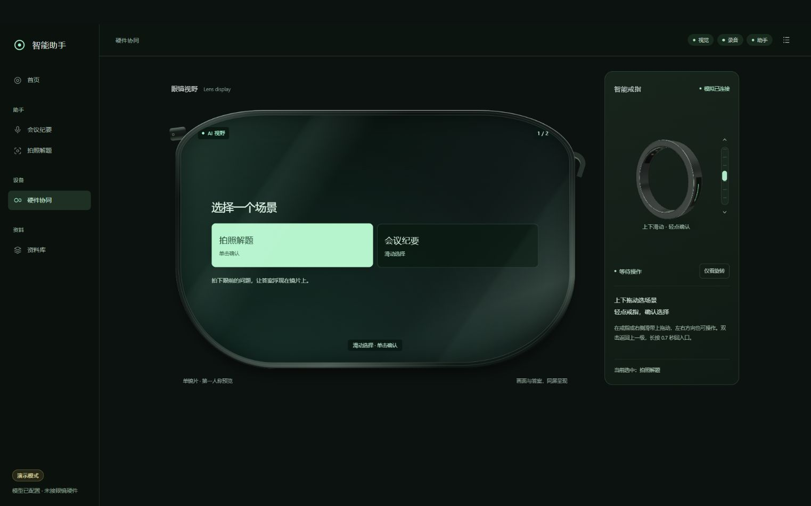
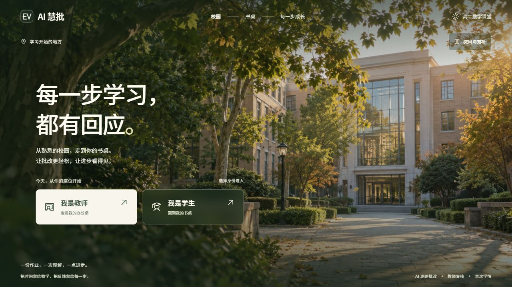
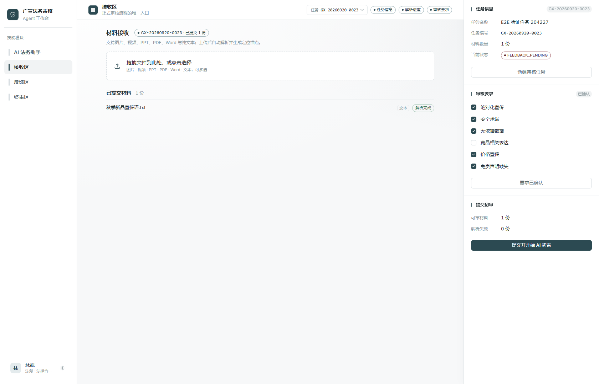

HARDWARE × MULTIMODALPERSONAL PORTFOLIO / 2026
齐正涵.
让 AI 走进
真实世界。
AI 产品经理 · 智能硬件方向
探索 AI Native、多模态交互与 Agent 工作流。
从人的需求出发，把想法变成可体验的产品。
HUMAN INTENT. MACHINE INTELLIGENCE.
INTELLIGENCE COREMODEL / QZ–01
VISION感知
REASON理解
ACTION行动
INTERACTIVE DEMO
等待你的意图_
A VISUAL EXPLORATION OF AI NATIVE
BUILDING AT THE INTERSECTION OFAI Native智能硬件多模态交互Agent 工作流
01 / SELECTED WORK
从想法，到真实界面让产品说话.
三个方向，一种坚持：
让 AI 在具体场景里，产生具体价值。

EDUCATION × AI NATIVE
02 / AGENT WORKFLOW
广宣审核 Agent
让风险发现、人工判断和整改过程可追溯。
证据定位RAG版本复审
DESIGNED WITH INTENT. BUILT TO BE EXPERIENCED.更多代码探索